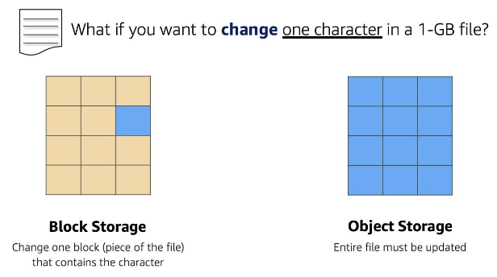

Storage and Database
Week3
Engineering
AWS
- Storage Types 
- Block Storage: split into fixed size chunk of data
- easy to change small parts: change only block/piece of the data
- for frequently modified data, or data with a high trasaction rate (like app or system files)
- Object Storage: each file = single unit of data
- to change even small parts: need to update the entire file
- for WORM(write once, read many) model
- accessed often, but modified rarely (like photo)
- File Storage: tree-like hierarchy (folders → subfolders)
- similar to windows file explorer or MacOS Finder
- for files shared/managed by multiple host computers
- user home directories, developmental environments
- Block Storage: split into fixed size chunk of data
- block storage
- boot volume for OS or data volume
- block storages for EC2 instances
- EC2 instance store: internal storage, ephemeral storage
- directly(physically) attached: fast, quick response
- life cycle is tied to the instance: lose data when stop/terminate the instance
- Amazon Elastic Block Store(Amazon EBS): external storage, persistent storage
- separate from EC2, user-configured size
- one-to-one with EC2 instances (can’t be shared/attached to multiple instances): secure communication
- can be detached → attached to another instance in the same AZ
- for multiple attachements: need to use Amazon EBS Multi-Attach
- Types of EBS
- SSD backed volumes: for random I/O
- HDD backed volumes: for sequential I/O
- backing up data: (EBS)Snapshot
- for employee photos: can’t use amazon EBS
- can’t be attached to instances when the app scales
- has size limitations
- amazon simple storage service(Amazon S3)
- standalone, don’t mount onto EC2 instances
- access data through URL: storage for the internet
- size limit for a single object: 5Tb
- flat structure: use unique identifiers(?)
- distributed storage: store data across multiple different facilities within one AWS region
- durable storage system
- S3 buckets: objects is stored in buckets
- need to create buckets first
- can make folders inside
- region specific
- name: should be globally unique across AWS accounts, DNS compliant (no special characters, spaces, etc.)
- URL will be constructed using the name → should be reached with HTTP/HTTPS
- bucket URL → append object key to bucket URL

Bucket URL
- Accesss control
- default: everything in S3 is private → can give public access
- to make object publically access, need to change bucket settings
- default: everything in S3 is private → can give public access
- policies
- IAM policies
- S3 bucket policies
- JSON format (like IAM policies)
- only placed on buckets (can apply for another AWS accounts or anonymous users)
- not for folders/objects
Relational database(RDB): data를 table 형태로 저장, 서로 다른 table간 data는 relationship으로 연결됨
RDB - Table은 row와 column으로 구성
- row는 record라고도 부르며 특정 개체에 관련된 모든 정보를 담고 있음
- column은 attribute라고도 부르며 개체의 각 속성을 나타냄
Schema: 각 table 별 관계 및 column에 들어갈 data type 등을 정의한 것
- schema는 한 번 설정하고 나면 변경하기 어려움
- 예시: MySQL, PostgresQL, Oracle, SQL server, Amazon Aurora
- 일반적으로 SQL query를 사용해서 data 접근 및 수정
장점
- Joins: table을 join하여 data간 관계를 쉽게 이해 가능
- Reduced redundancy: 일부 attribute만 다른 경우 table을 나누어 중복 정보가 저장되는 것을 방지할 수 있음
- Familiarity: 오래된 기술이기 때문에 자료가 많아서 적응하기 쉬움
- Accuracy: data의 안정성 및 결과 보장 참고
사용처
- Schema가 거의 변경되지 않는 application들
- 작업 및 data의 안정성이 필요한 분야 전반
- Enterprise Resource Planning (ERP) applications
- Customer Relationship Management (CRM) applications
- Commerce and financial applications
RDB on AWS
Managed database: EC2 or AWS database service

EC2 or AWS database service
Amazon RDS: AWS에서 제공하는 RDB service
- Commercial: Oracle, SQL Server
- Open Source: MySQL, PostgreSQL, MariaDB
- Cloud Native: Amazon Aurora Note: The cloud native option, Amazon Aurora, is a MySQL and PostgreSQL-compatible database built for the cloud. It is more durable, more available, and provides faster performance than the Amazon RDS version of MySQL and PostgreSQL
DB instance type - 아래 type 내에서 size 별 선택지 존재
- Standard, which include general-purpose instances
- Memory Optimized, which are optimized for memory-intensive applications
- Burstable Performance, which provides a baseline performance level, with the ability to burst to full CPU usage.
DB storage - the DB instance uses Amazon Elastic Block Store (EBS) volumes as its storage layer
- 용량: 20~65536Gb
- General purpose (SSD)
- Provisioned IOPS (SSD)
- Magnetic storage (not recommended)
DB subnet group
- DB를 사용하기 위해서 VPC 및 subnet 설정 필요 => availability zone 내 subnet 지정 필요
- DB subnet은 private해야 됨 - gateway에 직접 연결 금지 for 보안
- 보안의 경우 ACL 및 security group으로 통제 가능 - network section 참고
IAM policy
- DB subnet group은 traffic을 조절
- IAM policy는 data와 table에 대한 접근 및 수정 권한을 조절
Backup
- Automatic
- default로 설정
- log 및 DB instance 자체를 백업
- 주기: 0~35일 0일의 경우 automatic 백업을 disable, 기존 backup도 삭제됨
- 방식: point-in-time => 특정 기간 내 일어난 transaction에 대해서 recovery
- Manual snapshot
- 35일보다 긴 기간에 대해 backup할 때 사용
- Backup recovery: 새 instance를 생성
- Automatic
Redundancy
- Multi-AZ를 허용할 경우, Amazon RDS가 다른 AZ에 redundant copy 생성
- Primary copy: 평소에 사용하는 copy
- Standby copy: primary copy에 접근이 불가한 경우 사용하는 copy
- 두 copy간 싱크로는 자동 유지
- DB instance 생성시 DNS를 설정하면 AWS가 이를 인식하여 자동으로 failover 수행
- Redundant copy는 subnet에 존재해야 됨
Amazon DynamoDB
- Fully managed NoSQL database service: provides fast and predictable performance with seamless scalability
- Serverless
- RDB와 달리 size 제한 없음
- 자동 scale 조절
- SSD에 자동 저장되며 replication 또한 자동 수행
- No schema
저장된 데이터 양과 접근 횟수에 따라 과금
구성 요소
- Table: RDB와 유사하게 item의 집합으로 구성
- Item: 다른 item과 unique하게 구분가능한 data, 개수 제한 없음, attribute의 조합으로 구성됨, RDB와 달리 각 item의 attribute 개수가 다를 수 있음 RDB의 row에 대응
- Attribute: RDB와 달리 같은 attribute라도 다양한 type의 정보를 저장할 수 있음? RDB의 column에 대응
AWS Database Services
- 선택 기준
- RDB: 데이터 간 관계가 복잡하고 별도 관리가 필요한 경우에 사용 복잡도에 의해 overhead가 발생하기 때문
- Key-value DB: Large scale, low latency 보장, 단순 데이터 저장 및 조회 목적으로 적합 => RDB에서는 여러 table에 나누어 저장해야 되는 정보를 한 table에 저장 가능
- Graph: SNS와 같은 관계형 자료구조에 적합
- Ledger: 금융과 같은 안정성, 변경 불가가 필요한 자료를 저장하는 경우에 적합
1 Storage on AWS
1.1 Storage Types of AWS
2 Amazon EC2 Instance Storage and Amazon Elastic Block Store

3 Object Storage with Amazon S3
4 Databases on AWS
| Database Type | Use Cases | AWS Service |
|---|---|---|
| Relational | Traditional applications, ERP, CRM, e-commerce | Amazon RDS, Amazon Aurora, Amazon Redshift |
| Key-value | High-traffic web apps, e-commerce systems, gaming applications | Amazon DynamoDB |
| In-memory | Caching, session management, gaming leaderboards, geospatial applications | Amazon ElastiCache for Memcached, Amazon ElastiCache for Redis |
| Document | Content management, catalogs, user profiles | Amazon DocumentDB (with MongoDB compatibility) |
| Wide column | High-scale industrial apps for equipment maintenance, fleet management, and route optimization | Amazon Keyspaces (for Apache Cassandra) |
| Graph | Fraud detection, social networking, recommendation engines | Amazon Neptune |
| Time series | IoT applications, DevOps, industrial telemetry | Amazon Timestream |
| Ledger | Systems of record, supply chain, registrations, banking transactions | Amazon QLDB |